Built for Every Packaging Need
V-Plus Packaging Industries Limited produces 36 product lines across three manufacturing units – corrugation, plastic, and BOPP & flexible packaging. From heavy-duty 3, 5 and 7 ply cartons to jerricans, water bottles, BOPP tapes and paper cups, our solutions protect your goods from production to delivery.
Whatever your size, strength, material or branding requirements, V-Plus delivers consistent quality and dependable bulk supply across Rwanda and the region.
Corrugation
Corrugated cartons (3/5/7 ply), pizza, cake, vegetable, beverage, snack, chick and die-cut boxes, egg trays, paper bags and honeycomb paper.
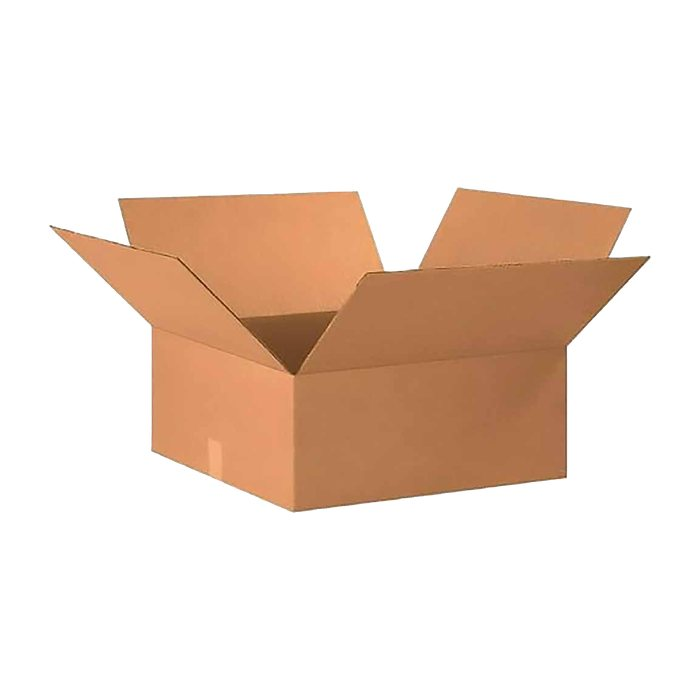
Corrugated Cartons
- 3 PLY, 5 PLY, 7 PLY and heavy-duty cartons
- Custom sizes, ply combinations and strength specifications
- For FMCG, beverages, pharmaceuticals, electronics, agriculture and industrial products
- Designed for safe handling, stacking and transportation

Egg Trays
- Durable, lightweight trays for safe storage and transport of eggs
- Made from recyclable, eco-friendly paper pulp
- Custom sizes and capacities for small, medium and large eggs
- Shock absorption during handling and distribution
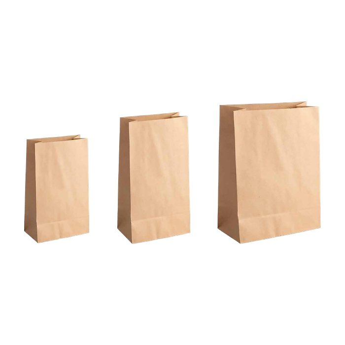
Paper Bags
- Eco-friendly bags for retail, grocery and food packaging
- Multiple sizes, thicknesses and designs
- Custom printing and branding for promotional use
- Strong for lightweight to medium-weight products
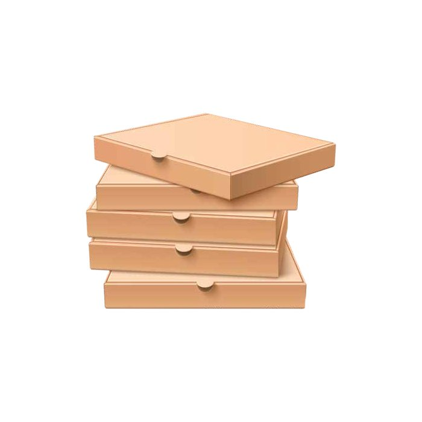
Pizza Boxes
- Food-grade corrugated and carton boxes for pizza packaging
- Multiple sizes and thicknesses
- Retain heat and protect pizza during delivery and transport
- Custom branding and printing available
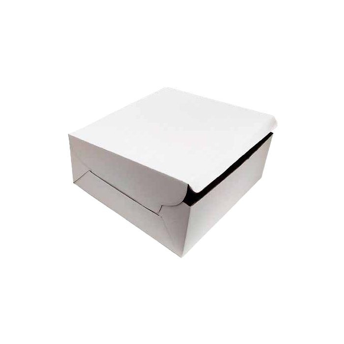
Cake Boxes
- Food-grade boxes for cakes and pastries
- Sizes 8×8, 10×10 and 12×12 inch
- For bakeries, restaurants and hotels
- Recyclable kraft and white board
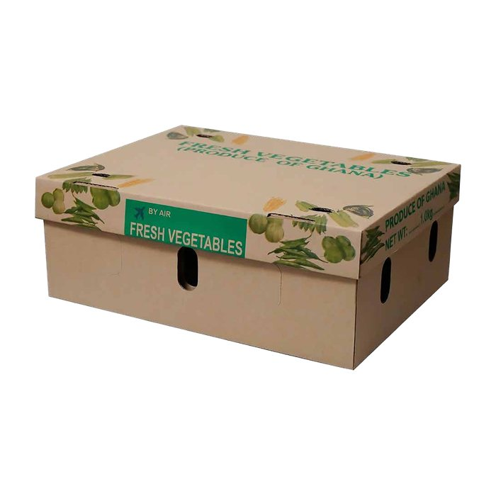
Vegetable Boxes
- Ventilated cartons for vegetables and fruits
- Capacities 3 kg, 4 kg, 5 kg and 10 kg
- For agriculture, horticulture and export
- Custom printed or plain
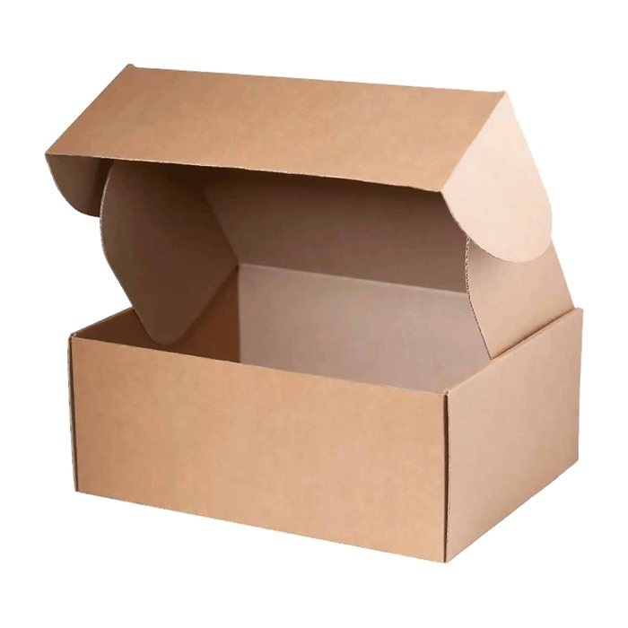
Die-Cut Boxes
- Custom shapes cut with special dies
- Mailers, trays and shelf-ready packs
- Sizes 8×8, 10×10, 12×12 inch and custom
- Custom printed or plain
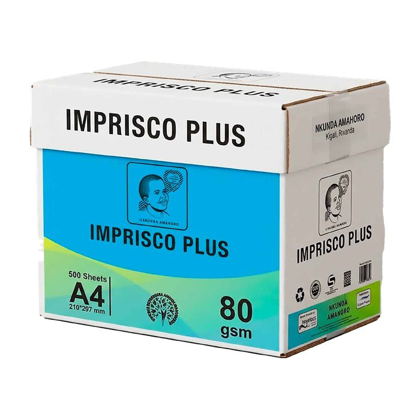
Stationery Boxes
- Boxes for A4 paper reams and archive files
- Regular slotted (RSC) or die-cut designs
- Strong board that protects paper and tools
- Custom branding available
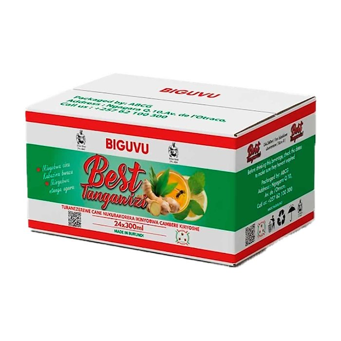
Beverage Boxes
- Cartons for soda, juice and liquor
- All sizes, made to your bottles
- Customisable full-colour prints
- Plastic-free and 100% recyclable
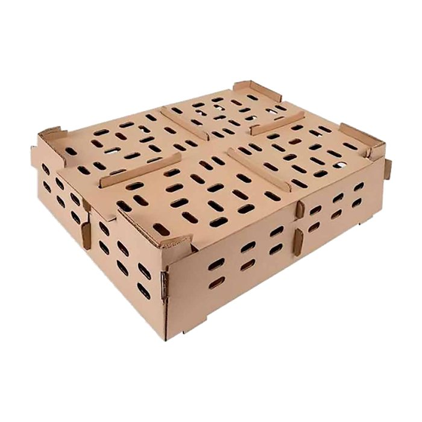
Chick Boxes
- Ventilated boxes for day-old chicks
- Capacities for 50 and 100 chicks
- Airflow slots keep chicks safe even when stacked
- For hatcheries and poultry farms
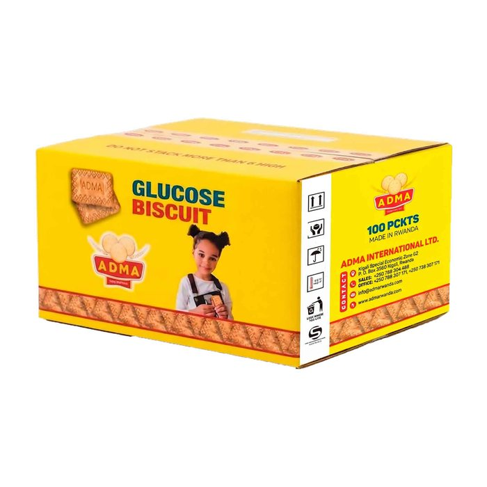
Snack Boxes
- Branded cartons for biscuits and snacks
- Available in brown or white board
- Eye-catching print that sells your product
- Strong for transport and display
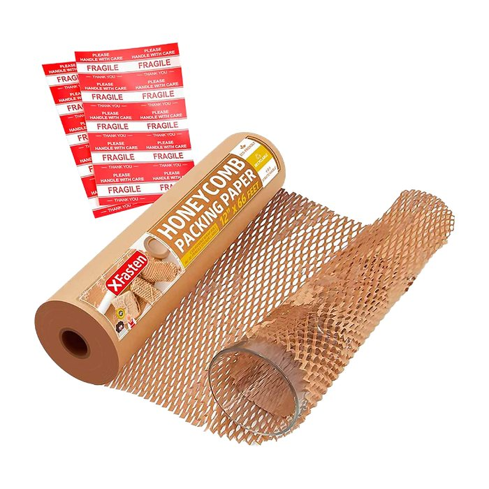
Honeycomb Packaging Paper
- Protective honeycomb kraft paper wrap
- Highly stretchable and easy to cut
- 100% biodegradable – replaces bubble wrap
- For glass, fragile items and transit
Plastic
Jerricans, PET/HDPE/PP/PC bottles, water gallons, buckets, chairs, stools, bins, tableware, jugs, cups, soap dishes and bottle caps.
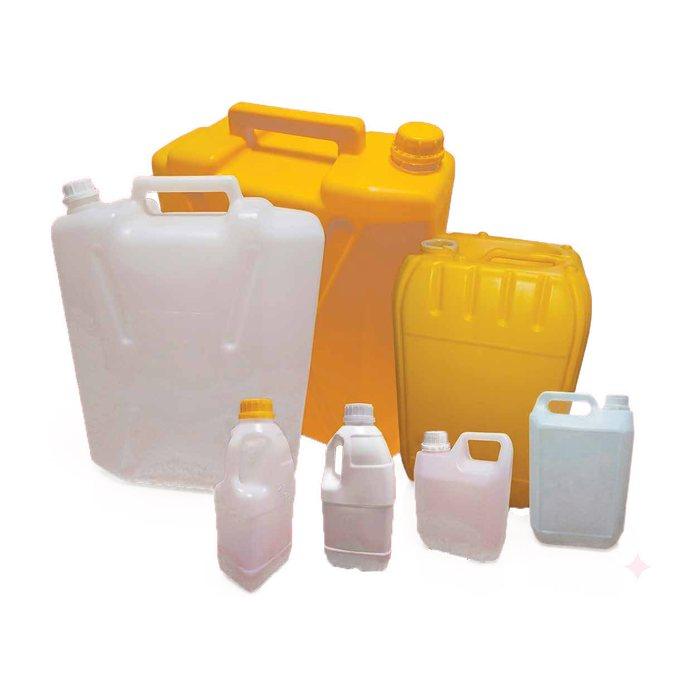
Plastic Jerricans
- Available in multiple capacities and designs
- Leak-proof and impact-resistant
- For liquids, chemicals, oils and industrial products
- Custom colours, caps and branding

PET, HDPE, PP & PC Products
- Containers, jars and bottles in PET, HDPE, PP and PC
- Food-grade and industrial-grade options
- Includes toilet cleaner and laundry bottles (1 L and on request)
- Custom shapes, capacities, colours and closures
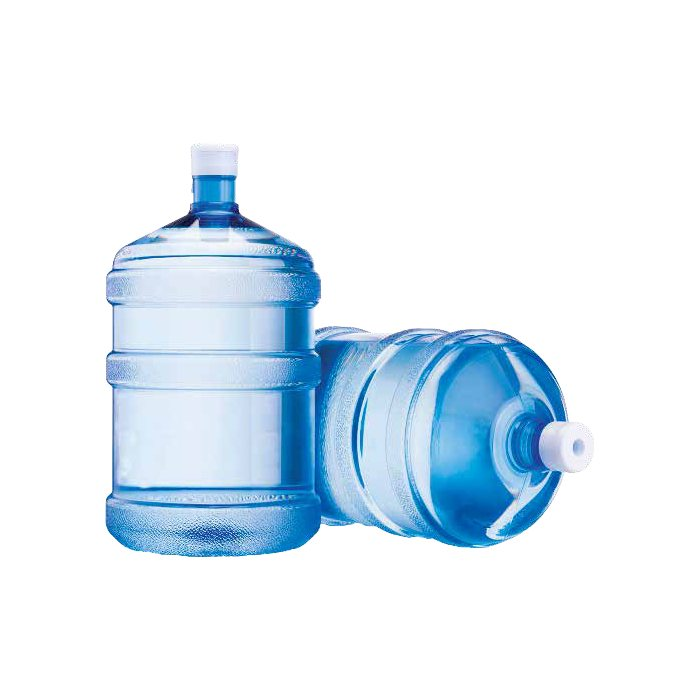
Water Bottles & Gallons
- PET and HDPE water bottles, and 18.9 L PC water gallons
- Food-grade and safe for drinking water
- For mineral water, juice and beverage brands
- Custom labelling, cap options and branding
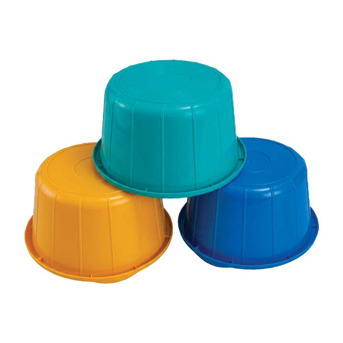
Domestic Products
- Buckets, basins, containers and storage items
- Durable, lightweight, in multiple colours and sizes
- For retail, wholesale and institutional supply
- Custom branding and packaging options
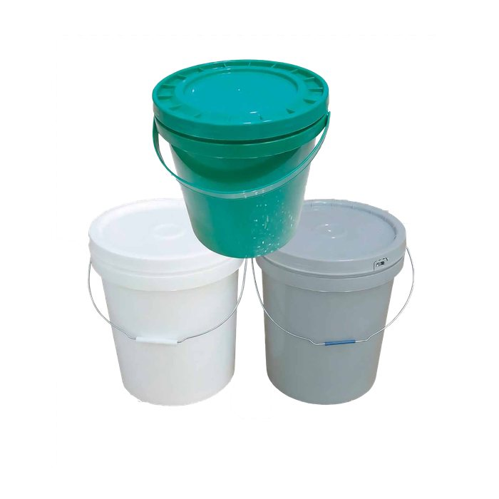
Buckets
- 5, 10, 15, 16, 20, 25, 30 and 35 litre sizes
- With lids and metal handles
- For household, food, agriculture and construction
- Custom colours and branding
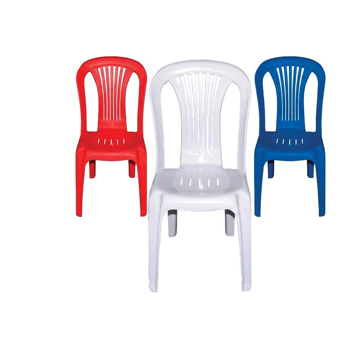
Plastic Chairs
- Strong, stackable plastic chairs
- Colour customisation available
- For homes, events, restaurants and schools
- Bulk supply for institutions
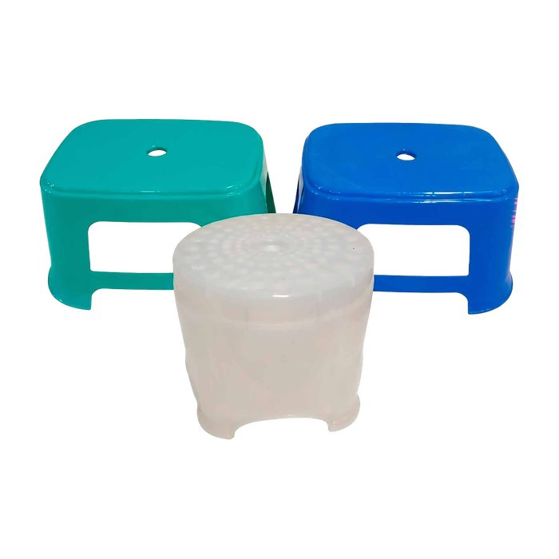
Short Stools
- Sturdy low stools
- For households, bathrooms and as steps
- Colour customisation available
- Lightweight and easy to clean
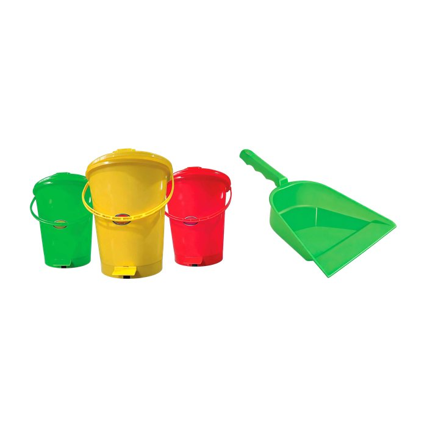
Trash Bins & Dustpans
- Pedal bins, waste baskets and dustpans
- For homes, offices, hotels and storage
- Colour customisation available
- Durable and easy to clean
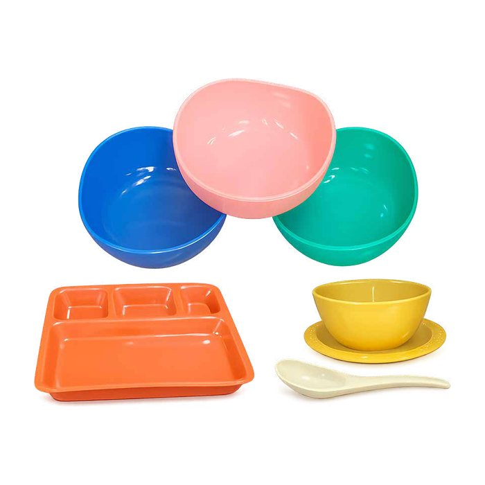
Lunch Boxes & Tableware
- Food trays, bowls, plates and spoons
- Food-safe plastic
- For households, offices, hotels and schools
- Colour customisation available
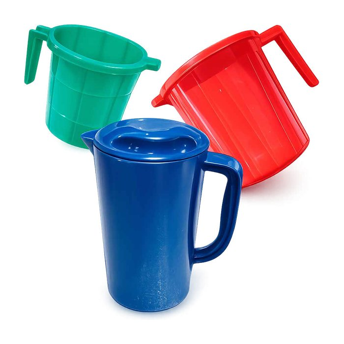
Jugs
- Water and juice jugs with lids
- For households, hotels, restaurants and schools
- Colour customisation available
- Durable, food-safe plastic
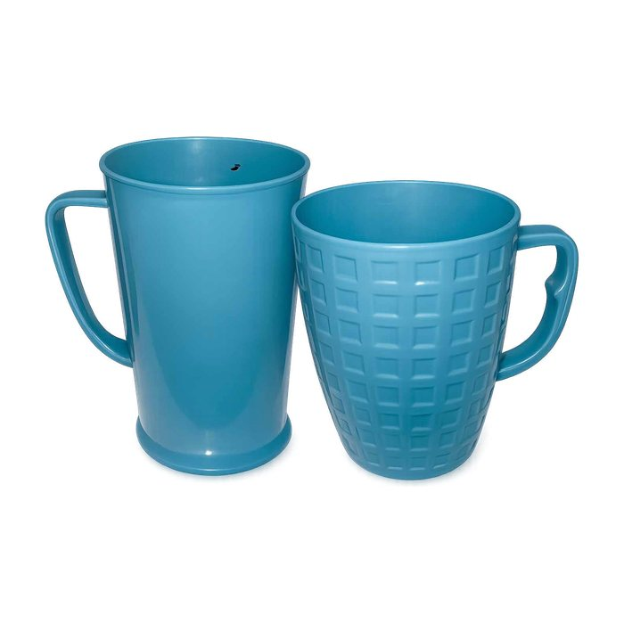
Plastic Cups
- Reusable drinking cups and mugs
- For households, hotels and schools
- Colour customisation available
- Food-safe and durable
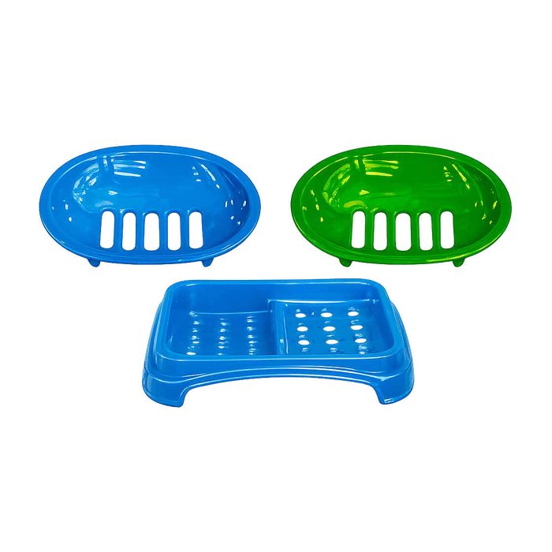
Soap Dishes
- Draining soap dishes
- For households, hotels and schools
- Colour customisation available
- Easy to clean
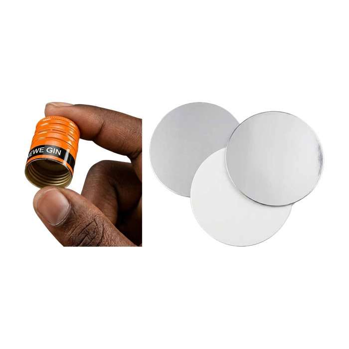
Bottle Caps & Seals
- Caps and closures for beverage bottles
- Seal pads stop leaks during transport
- Custom colours and printed designs
- For water, juice, soda and spirits
BOPP & Flexible Packaging
BOPP tapes, flexible packaging, stickers, aluminium and powder pouches, tissue wrappers, laminated rolls, paper cups, master batch and core pipes.

BOPP Adhesive Tapes
- High adhesion for manual and machine application
- Transparent, brown and custom printed options
- For carton sealing, logistics and warehouse operations
- Consistent quality and reliable performance
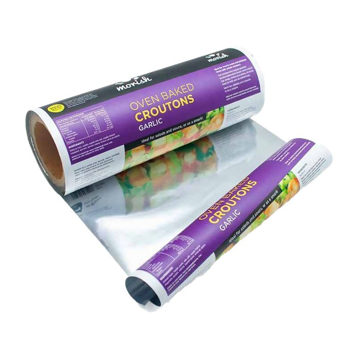
BOPP Flexible Packaging
- Biaxially oriented polypropylene films
- Excellent clarity, gloss and printability
- For food, snacks, confectionery and FMCG products
- Laminated and plain options with custom printing

Flexible Packaging
- Food and non-food packaging applications
- Laminated, printed and customised solutions
- Protects against moisture, contamination and environmental factors
- Ideal for snacks, grains, powders and detergents
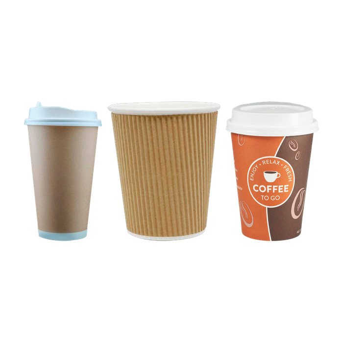
Paper Cups
- Food-grade disposable cups for hot and cold beverages
- For offices, cafés, catering and hospitality
- Leak-proof coating for hygienic use
- Multiple sizes and customised designs

Master Batch
- Colour and additive master batches for plastic processing
- Standard and custom colour formulations
- Compatible with PE, PP, PET and other polymer bases
- Enhances aesthetics, UV resistance and processing

Core Pipes
- Industrial paper cores for winding films, tapes and flexible materials
- Various inner diameters and wall thicknesses
- High compressive strength for heavy-duty winding
- Used in BOPP tape, flexible packaging and textiles
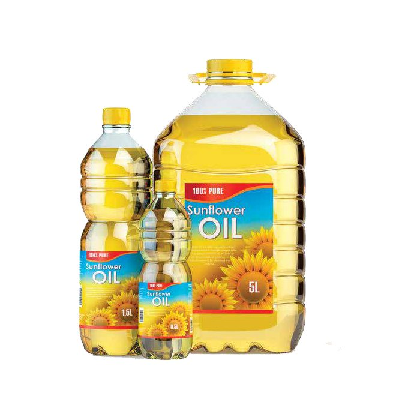
Stickers & Labels
- Waterproof, strong product labels
- Paper, PVC and transparent film
- For water, juice, yoghurt, oil and more
- Custom designs that stand out on the shelf
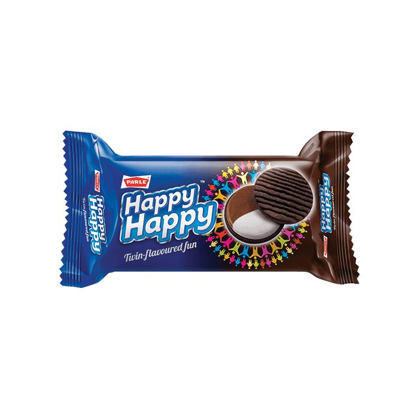
Aluminium Pouches
- Foil pouches for food and drinks
- Protect hygiene and extend shelf life
- For water, juice, yoghurt, snacks and more
- Custom printed designs
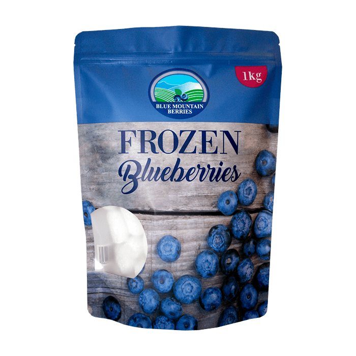
Powder Pouches
- Stand-up and flat pouches for powders
- Tight seals keep moisture out
- For powdered juice, milk, coffee and flour
- Custom printed designs
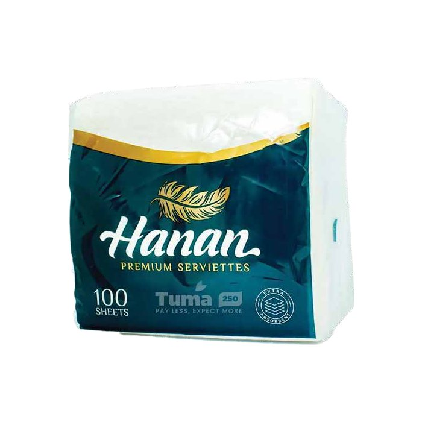
Tissue Wrappers
- Printed wrappers for tissues and napkins
- Ultra-clear gloss with sharp print
- Runs smoothly on high-speed packing lines
- PVC and transparent film
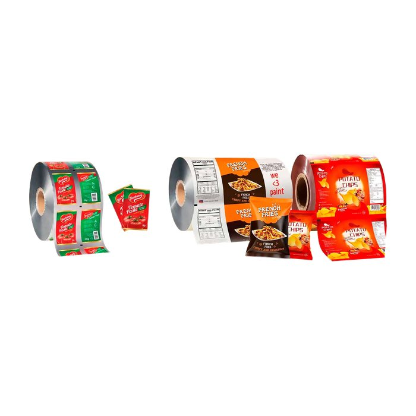
Laminated Rolls
- Aluminium foil laminated films
- Zero moisture, oxygen, light and odour
- For snacks, biscuits, sachets, blister and strip packs
- Maximises product shelf life